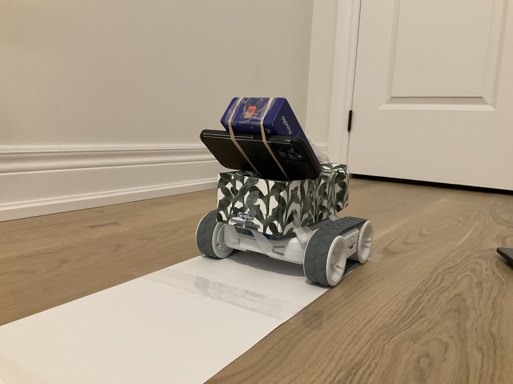

Ibrahim Khawar
Writings
CarNet and the Case for Communicating Cars
Driving is still built around isolation. Human drivers and autonomous systems usually make decisions from their own local view of the world, which means they react late and guess often.
CarNet explores a different model: vehicles broadcasting intent so nearby systems can respond before a maneuver becomes a risk. The prototype uses a Sphero RVR robot, a smartphone video feed, lane-following logic, object detection, and bidirectional communication to simulate that behavior.
What matters most to me is the underlying idea. If machines coordinating on roads can exchange the right information at the right time, we can make transportation meaningfully safer.
